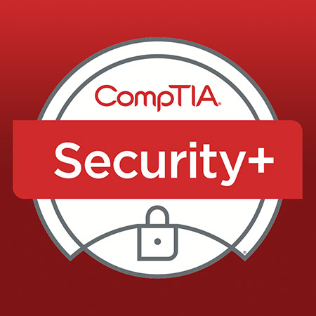
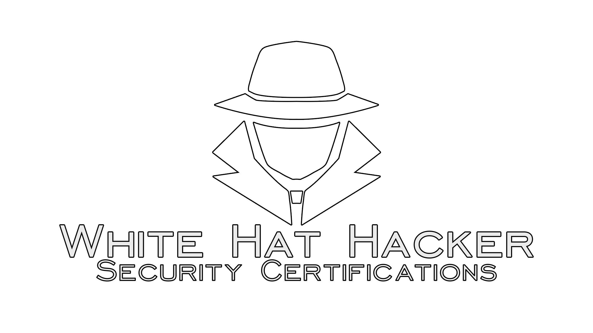
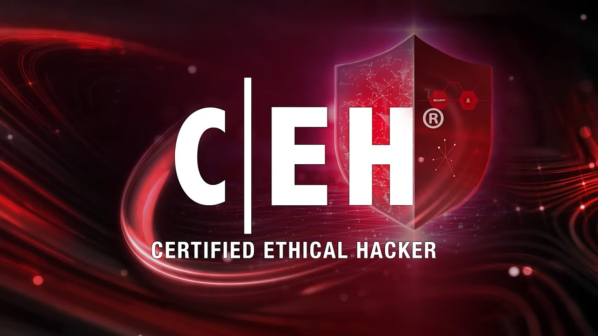

I am learning Linux, Networking, Security+, CEH, Python, Bash scripting, and ethical hacking tools.
My name is Enayat Azimi. I am passionate about cybersecurity, ethical hacking, Linux systems, and penetration testing.



Email: saeedazimi460@gmail.com
GitHub: github.com/enayatazimi